अध्याय 1: संविधान: क्यों और कैसे?
(Constitution: Why and How?)
कल्पना कीजिए, आप एक मैदान में फुटबॉल खेलने उतरे हैं, लेकिन उस खेल का कोई नियम नहीं है। कोई रेफरी नहीं है, कोई 'फाउल' तय नहीं है और न ही गोल पोस्ट सीमित है। ऐसी स्थिति में खेल नहीं, बल्कि अराजकता (Anarchy) होगी। समाज भी इसी तरह एक जटिल 'खेल' है जहाँ अलग-अलग विचारों वाले करोड़ों लोग एक साथ रहते हैं।
- असुरक्षा: बिना नियमों के शक्तिशाली व्यक्ति कमज़ोर को दबा देगा, जिससे समाज में डर का माहौल होगा।
- विकास में बाधा: जब तक हमें यह भरोसा न हो कि दूसरे लोग नियमों का पालन करेंगे, हम निवेश या भविष्य की योजना नहीं बना सकते।
- समाधान: संविधान ही वह 'रेफरी' और 'नियम पुस्तिका' है जो समाज को टूटने से बचाती है।
📖 गहरी दार्शनिक अंतर्दृष्टि
प्रसिद्ध दार्शनिक थॉमस हॉब्स ने कहा था कि बिना किसी शासन या नियम के मनुष्य का जीवन "एकाकी, गरीब, घृणित और पाशविक" होता है। संविधान का पहला कार्य हमें इसी 'पाशविक अवस्था' से बाहर निकालना है।
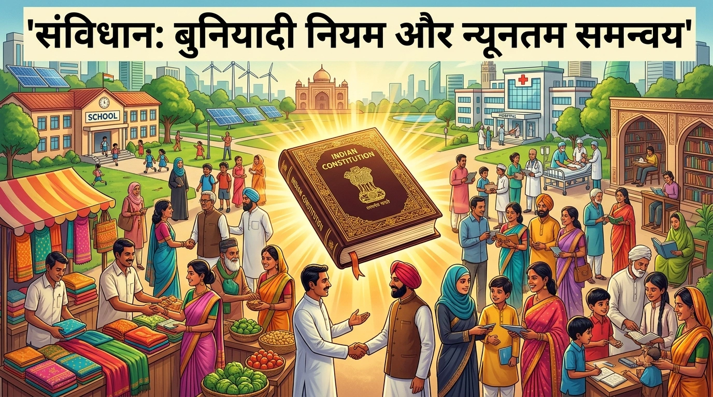
🎨 सचित्र शिक्षण कार्ड: संविधान, बुनियादी नियम और न्यूनतम समन्वय
संविधान समाज के विभिन्न वर्गों के बीच अविश्वास और अराजकता को समाप्त कर शांतिपूर्ण सह-अस्तित्व और सहयोग के बुनियादी सार्वजनिक नियम उपलब्ध कराता है।
संविधान का सबसे पहला और बुनियादी कार्य यह है कि वह समाज के सदस्यों के बीच एक न्यूनतम समन्वय (Minimum Coordination) और विश्वास पैदा करे।
- सार्वजनिक नियमों की घोषणा: जब नियम लिखित और सार्वजनिक होते हैं, तो सबको पता होता है कि क्या मान्य है और क्या नहीं।
- कानूनी बाध्यता: नियम केवल 'सलाह' नहीं होते, बल्कि 'बाध्यकारी' होते हैं। यदि कोई उल्लंघन करता है, तो उसे दंड मिलता है। यही डर लोगों में भरोसा जगाता है कि दूसरे भी नियमों का पालन करेंगे।
- सकल कल्याण: नियम ऐसे होने चाहिए जो समाज के किसी एक वर्ग का नहीं, बल्कि सबका भला करें।
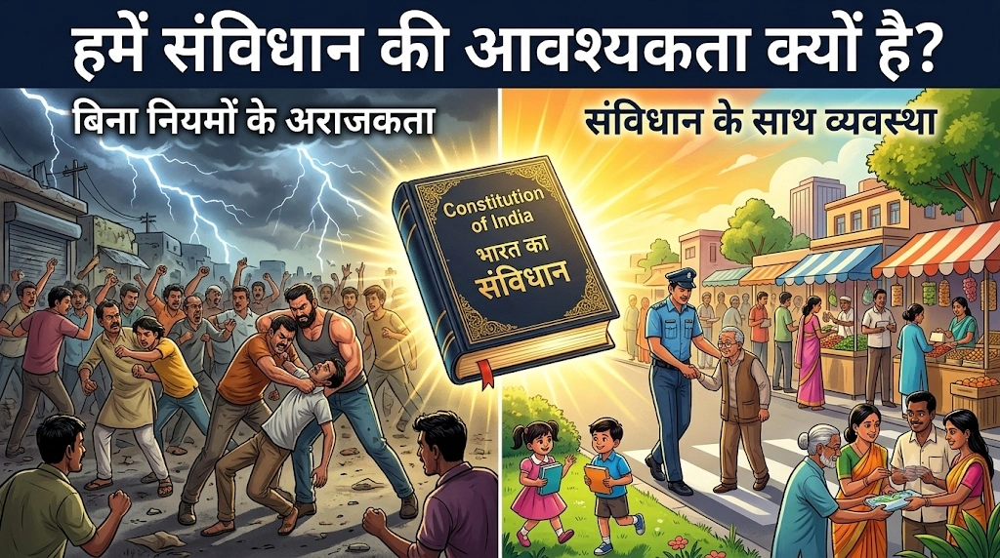
🎨 सचित्र शिक्षण कार्ड: हमें संविधान की आवश्यकता क्यों है?
बिना संविधान और नियमों के समाज में केवल अराजकता, असुरक्षा और शक्तिशाली द्वारा कमजोर का दमन होता है। संविधान ही वह पवित्र आधार है जो कानून का शासन, नागरिकों की सुरक्षा, विश्वास और शांतिपूर्ण विकास सुनिश्चित करता है।
नियम अच्छे हो सकते हैं, लेकिन वे नियम बनाएगा कौन? प्राचीन काल में राजा बनाते थे, किसी देश में सेना बना सकती है। संविधान यह तय करता है कि समाज में अंतिम निर्णय लेने की शक्ति किसके पास होगी।
- संसदीय लोकतंत्र: भारत जैसे देशों में संविधान यह शक्ति 'संसद' (Parliament) को देता है।
- जनता की भूमिका: अंततः यह शक्ति जनता के पास होती है, जो अपनी पसंद के प्रतिनिधियों को चुनकर संसद भेजती है।
- संस्थागत ढांचा: संविधान यह भी तय करता है कि न्यायपालिका, कार्यपालिका और विधायिका कैसे काम करेंगी, ताकि कोई एक संस्था निरंकुश न हो जाए।
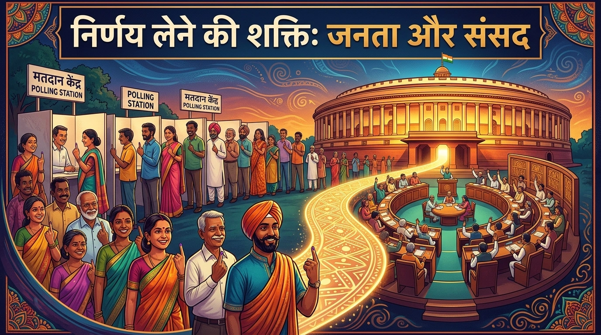
🎨 सचित्र शिक्षण कार्ड: निर्णय लेने की शक्ति का निर्धारण
लोकतंत्र में शासन और विधि-निर्माण की अंतिम शक्ति जनता के हाथ में होती है, जो निष्पक्ष मतदान द्वारा अपने जनप्रतिनिधियों और संसद को लोक-कल्याणकारी कानून बनाने का अधिकार सौंपती है।
अगर संसद ऐसा नियम बना दे कि "कल से कोई व्यक्ति सुबह की प्रार्थना नहीं करेगा" या "विशिष्ट वर्ग के लोगों को जेल में डाल दिया जाएगा", तो क्या यह सही होगा? नहीं! इसीलिए संविधान सरकार पर कुछ सीमाएँ लगाता है।
- मौलिक अधिकार (Fundamental Rights): ये वे अधिकार हैं जिन्हें सरकार भी सामान्य परिस्थितियों में नहीं छीन सकती।
- कानून सम्मत शासन: शासन व्यक्ति की मर्ज़ी से नहीं, बल्कि स्थापित कानूनों (Rule of Law) से चलना चाहिए।
- न्यायिक सुरक्षा: यदि सरकार अपनी सीमा पार करती है, तो नागरिक न्यायपालिका की शरण ले सकते हैं।
⚖️ संवैधानिक सुरक्षा कवच
सरकार की शक्तियों को सीमित करना ही किसी शासन को 'संवैधानिक शासन' (Constitutional Government) बनाता है। बिना इन सीमाओं के लोकतंत्र तानाशाही में बदल सकता है।
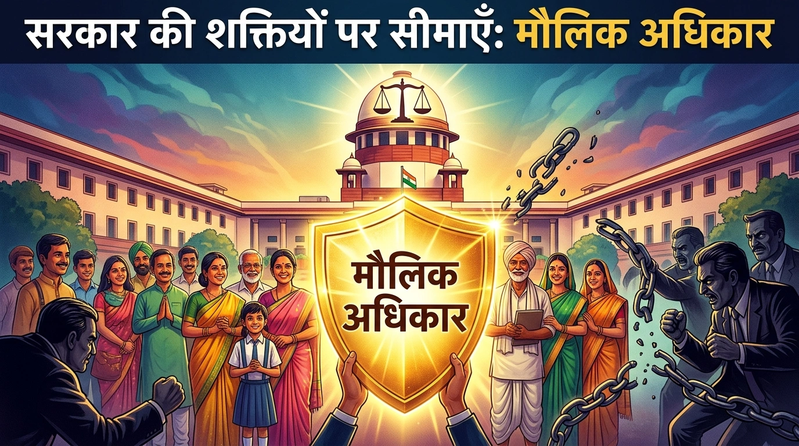
🎨 सचित्र शिक्षण कार्ड: सरकार की शक्तियों पर सीमाएँ (मौलिक अधिकार)
संविधान नागरिकों के मौलिक अधिकारों का ऐसा अभेद्य सुरक्षा कवच बनाता है जिसे कोई भी सरकार या सत्ता लांघ नहीं सकती, जिससे तानाशाही पर अंकुश और नागरिक स्वतंत्रता की रक्षा होती है।
पुराने जमाने के संविधान केवल सरकार की शक्तियों को 'सीमित' करने के लिए होते थे। लेकिन भारत जैसे विकासशील देशों में संविधान का चौथा कार्य है—सरकार को सशक्त बनाना ताकि वह सामाजिक बुराइयों को दूर कर सके।
- गरीबी और भेदभाव का अंत: संविधान सरकार को आदेश देता है कि वह जातिगत भेदभाव और गरीबी मिटाने के लिए विशेष नीतियां बनाए।
- समान अवसर: केवल आज़ादी देना काफी नहीं है, सबको विकास के समान अवसर देना भी संविधान का लक्ष्य है।
- उदाहरण: नीति निर्देशक तत्व (DPSP) और शिक्षा का अधिकार इसी सकारात्मक शक्ति के परिणाम हैं।
🎯 निष्कर्ष: संविधान केवल 'मना' नहीं करता, बल्कि 'मदद' भी करता है।
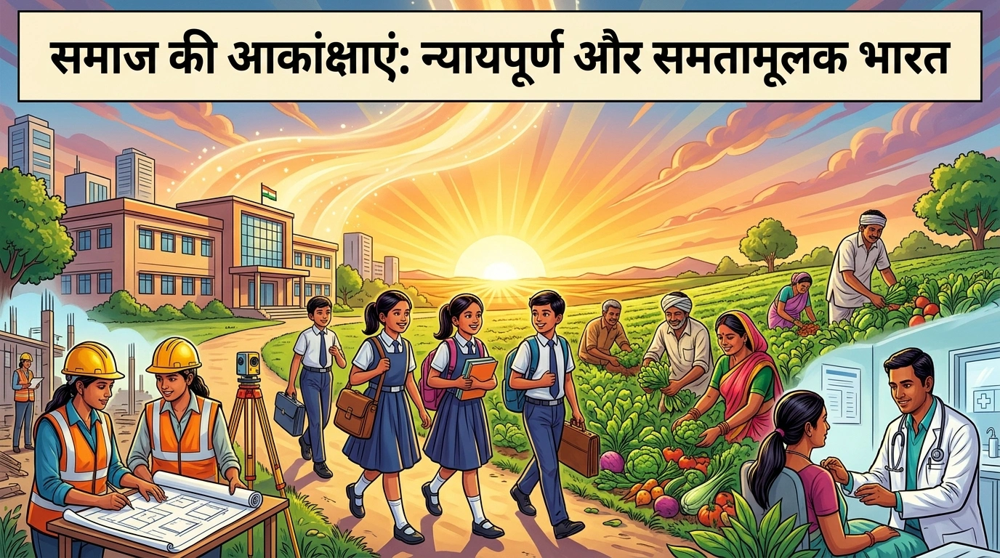
🎨 सचित्र शिक्षण कार्ड: समाज की आकांक्षाएं और समतामूलक समाज
भारतीय संविधान सरकार को मात्र सीमित नहीं करता, बल्कि एक न्यायपूर्ण समाज बनाने, जातिगत भेदभाव व गरीबी मिटाने और सभी को शिक्षा व स्वास्थ्य सुलभ कराने की सकारात्मक सामर्थ्य प्रदान करता है।
संविधान केवल एक कानूनी किताब नहीं है, बल्कि यह किसी भी समाज के लोगों की बुनियादी पहचान (Fundamental Identity) तय करता है। संविधान से पहले हम अलग-अलग जातियों, धर्मों या क्षेत्रों के लोग थे, लेकिन संविधान हमें एक 'राजनैतिक सामूहिक इकाई' बनाता है।
- राजनैतिक पहचान (Political Identity): संविधान उन बुनियादी नियमों पर सहमति बनाता है जिनके माध्यम से हमारा शासन चलाया जाएगा। इसी सहमति से हम 'नागरिक' बनते हैं।
- नैतिक पहचान (Moral Identity): संविधान यह तय करता है कि एक नागरिक के रूप में हम क्या 'कर सकते हैं' और क्या 'नहीं कर सकते'। यह हमारे नैतिक मूल्यों और सीमाओं को परिभाषित करता है।
- सांस्कृतिक पहचान: कई संविधान नागरिकता को साझा संस्कृति या भाषा से जोड़ते हैं, लेकिन भारतीय संविधान 'विविधता' को ही राष्ट्रीय पहचान का आधार बनाता है।
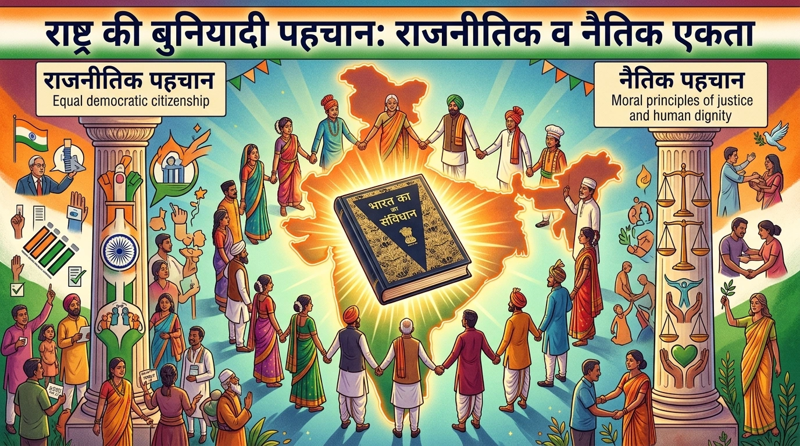
🎨 सचित्र शिक्षण कार्ड: राष्ट्र की बुनियादी पहचान (राजनीतिक व नैतिक एकता)
विविधता से भरे भारत में संविधान सभी नागरिकों को समान लोकतांत्रिक राजनीतिक पहचान और मानवीय गरिमा, न्याय व बंधुत्व की साझा नैतिक पहचान में एक सूत्र में पिरोता है।
दुनिया में बहुत से संविधान केवल कागज़ का टुकड़ा बनकर रह जाते हैं, लेकिन कुछ दशकों और सदियों तक चलते हैं। किसी संविधान की सफलता का सबसे बड़ा कारण है—उसे किसने और कैसे बनाया? (Mode of Promulgation)
- निर्माताओं की लोकप्रियता: यदि संविधान उन नेताओं द्वारा बनाया जाए जिन पर जनता अटूट विश्वास करती है (जैसे गांधी, नेहरू, अंबेडकर), तो जनता उस संविधान को स्वेच्छा से स्वीकार करती है।
- लोकप्रिय अनुमोदन: कई देशों में संविधान बनने के बाद जनता से सीधे 'हाँ' या 'ना' (Referendum) पूछा जाता है। यद्यपि भारत में ऐसा नहीं हुआ, लेकिन स्वतंत्रता सेनानियों के प्रति जनता की श्रद्धा ने इसे 'पूर्ण वैधता' दी।
- तानाशाही का अभाव: यदि कोई संविधान केवल सेना या तानाशाह द्वारा थोपा जाए, तो वह पहली फुर्सत में उखाड़ फेंका जाता है (जैसे पाकिस्तान या कई अफ्रीकी देशों में हुआ)।
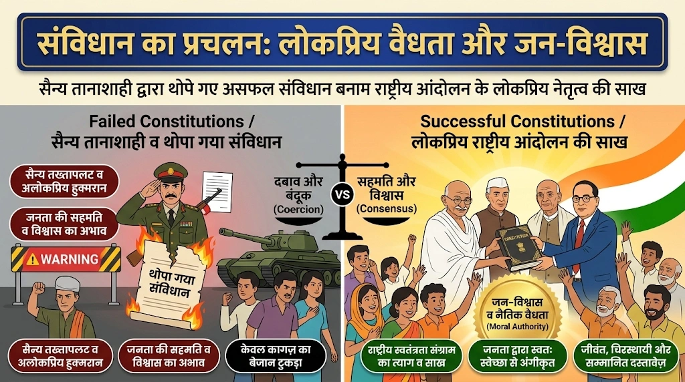
🎨 सचित्र शिक्षण कार्ड: संविधान का प्रचलन (लोकप्रिय वैधता और जन-विश्वास)
सैन्य तख्तापलट या अलोकप्रिय हुक्मरानों द्वारा बंदूक की नोक पर थोपे गए संविधान नष्ट हो जाते हैं, जबकि स्वतंत्रता संग्राम के निष्ठावान नेताओं (गांधी, नेहरू, पटेल, आंबेडकर) द्वारा जन-सहमति से निर्मित भारतीय संविधान को जनता का अटूट नैतिक प्राधिकार प्राप्त हुआ।
संविधान तभी सफल होता है जब वह समाज के हर वर्ग को यह विश्वास दिलाए कि उसकी भलाई इसी संविधान के साथ रहने में है। (Substantive Provisions)
- अल्पसंख्यक सुरक्षा: यदि कोई संविधान केवल बहुसंख्यकों का पक्ष ले और अल्पसंख्यकों का दमन करे, तो वह विद्रोह और गृहयुद्ध का कारण बनता है।
- समानता का भाव: जब तक गरीब और पिछड़े वर्गों को यह नहीं लगता कि संविधान उन्हें गरिमा और न्याय देगा, वे उसे अपना नहीं मानेंगे।
- लचीलापन: संविधान जड़ (Rigid) नहीं होना चाहिए; उसे बदलती परिस्थितियों के साथ ढलने की शक्ति देनी चाहिए।
⚖️ राजनैतिक दर्शन
"संविधान एक ऐसा समझौता है जिसमें हर कोई कुछ खोता है ताकि सब कुछ सुरक्षित रहे।" यदि कोई वर्ग महसूस करता है कि उसके पास खोने के लिए ही कुछ नहीं है, तो वह समझौते को तोड़ देगा।
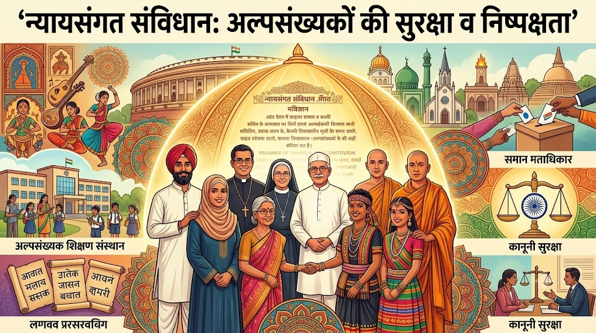
🎨 सचित्र शिक्षण कार्ड: न्यायसंगत संविधान (अल्पसंख्यकों की सुरक्षा व निष्पक्षता)
कोई भी संविधान तभी चिरस्थायी बन सकता है जब वह बहुसंख्यकों के साथ-साथ अल्पसंख्यकों और वंचित वर्गों को भी सुरक्षा, सांस्कृतिक पहचान और समान मताधिकार की ठोस संवैधानिक गारंटी प्रदान करे।
कोई भी समझदार संविधान अपनी सारी शक्तियाँ किसी एक संस्था या व्यक्ति को नहीं देता। शक्तियों का विकेंद्रीकरण ही संविधान की दीर्घायु का रहस्य है।
- विधायिका, कार्यपालिका और न्यायपालिका: शक्तियों को इन तीनों के बीच इस तरह बाँटा गया है कि कोई भी अपनी सीमा नहीं लाँघ सके। इसे अंकुश और संतुलन (Checks and Balances) कहते हैं।
- स्वतंत्र संस्थाएं: चुनाव आयोग, सीएजी (CAG) और यूपीएससी जैसी स्वायत्त संस्थाएं यह सुनिश्चित करती हैं कि राजनैतिक दबाव संविधान के साथ खिलवाड़ न कर सके।
- संघवाद (Federalism): शक्तियों को केवल केंद्र में नहीं, बल्कि राज्यों और पंचायतों तक भी पहुँचाया गया है।
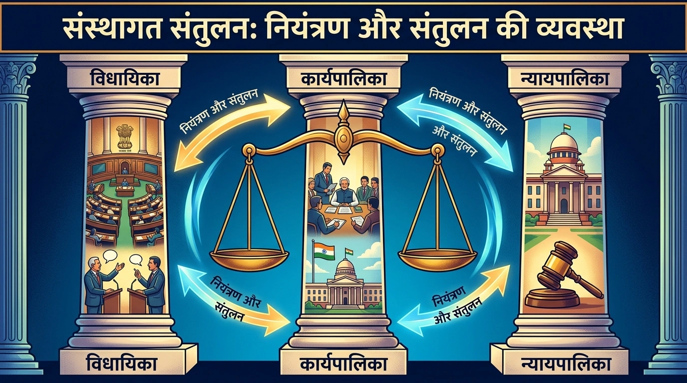
🎨 सचित्र शिक्षण कार्ड: संस्थागत संतुलन (नियंत्रण और संतुलन)
विधायिका, कार्यपालिका और न्यायपालिका के बीच संतुलित शक्ति-विभाजन (Checks and Balances) यह सुनिश्चित करता है कि कोई भी एकल संस्था निरंकुश होकर संविधान को बंधक न बना सके।
1947 के बाद आज़ाद हुए सैकड़ों देशों में से आधे से ज़्यादा देशों के संविधान फेल हो गए या वहाँ सेना का राज़ आ गया। भारत अपवाद क्यों बना?
दीर्घकालिक सफलता के मूलभूत कारण:
- लोच (Resilience): भारतीय संविधान न तो इतना कठोर है कि टूट जाए, और न ही इतना लचीला कि कोई भी उसे खेल बना ले।
- आम सहमति का सिद्धांत (Principle of Consensus): संविधान सभा में मतदान के बजाय 'चर्चा' और 'सबकी सहमति' को महत्व दिया गया।
- संविधान के प्रति पवित्र श्रद्धा: भारत के लोग, राजनेता और न्यायपालिका संविधान को एक 'पवित्र ग्रंथ' की तरह सम्मान देते हैं।
🎯 निष्कर्ष: भारतीय संविधान "जड़" नहीं, बल्कि एक "जीवंत दस्तावेज" (Living Document) है जो हर संकट के साथ और मज़बूत होता गया है।
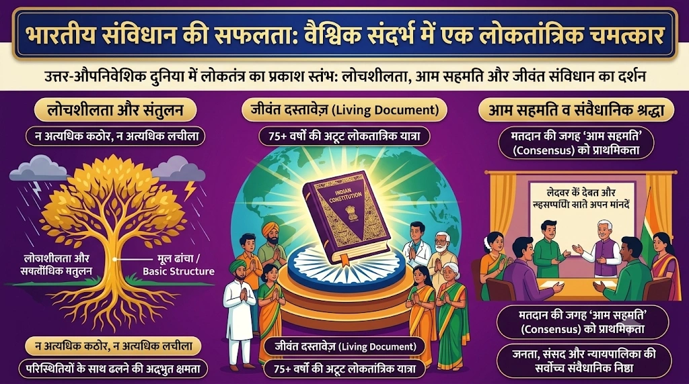
🎨 सचित्र शिक्षण कार्ड: भारतीय संविधान की सफलता (वैश्विक संदर्भ में लोकतांत्रिक चमत्कार)
कठोरता और लोचशीलता के संतुलन, मूल ढांचे की मजबूती, मत-विभाजन के बजाय आम सहमति के सिद्धांत और जन-साधारण की अटूट संवैधानिक श्रद्धा के कारण भारतीय संविधान 75+ वर्षों से विश्व के सबसे जीवंत लोकतंत्र का प्रकाश स्तंभ बना हुआ है।
भारतीय संविधान का निर्माण किसी शून्य में नहीं हुआ, बल्कि यह दशकों के संघर्ष और ब्रिटिश शासन के अनुभवों का निचोड़ है। औपचारिक रूप से इसकी शुरुआत कैबिनेट मिशन (1946) के प्रस्तावों के साथ हुई।
- कैबिनेट मिशन योजना: ब्रिटिश सरकार ने भारत को सत्ता सौंपने की प्रक्रिया तय करने के लिए तीन मंत्रियों का दल भेजा, जिसने संविधान सभा के गठन का मार्ग प्रशस्त किया।
- विभाजन की त्रासदी: संविधान सभा की पहली बैठक (9 दिसंबर 1946) अखंड भारत के लिए हुई थी, लेकिन 14 अगस्त 1947 के विभाजन ने इसकी रूपरेखा और सदस्यों की संख्या बदल दी।
- संप्रभुता की घोषणा: विभाजन के बाद, भारतीय संविधान सभा एक पूर्णतः 'संप्रभु संस्था' बन गई, जो किसी भी बाहरी दबाव के बिना भारत का भविष्य लिखने के लिए स्वतंत्र थी।
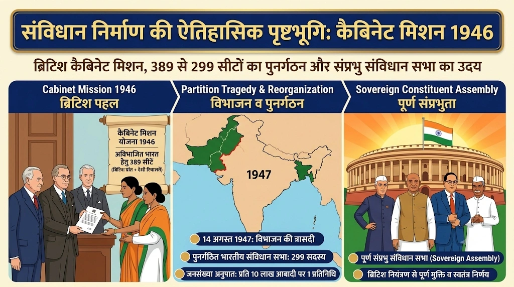
🎨 सचित्र शिक्षण कार्ड: कैबिनेट मिशन 1946 व संविधान निर्माण की ऐतिहासिक पृष्ठभूमि
कैबिनेट मिशन योजना 1946 के प्रस्तावों से आरंभ होकर, 14 अगस्त 1947 के विभाजन के बाद 299 सदस्यों के साथ पुनर्गठित हुई भारतीय संविधान सभा एक पूर्ण संप्रभु संस्था के रूप में स्वतंत्र भारत का भाग्य गढ़ने के लिए अग्रसर हुई।
विभाजन के पहले सभा में 389 सदस्य होने थे, लेकिन विभाजन के बाद यह संख्या घटकर 299 रह गई। इन सदस्यों का चुनाव अप्रत्यक्ष रूप से प्रांतीय विधानसभाओं द्वारा किया गया था।
- जनसंख्या के अनुपात में सीटें: लगभग 10 लाख की आबादी पर एक प्रतिनिधि तय किया गया था।
- विविधता का संगम: यद्यपि कांग्रेस का बहुमत था, लेकिन सदस्यों में वकील, किसान, दलित प्रतिनिधि, पारसी, ईसाई और मुस्लिम—सभी शामिल थे।
- महिलाओं की भूमिका: सभा में 15 महिला सदस्य थीं, जिन्होंने भारत की महिलाओं के अधिकारों के लिए मज़बूत आवाज़ उठाई।
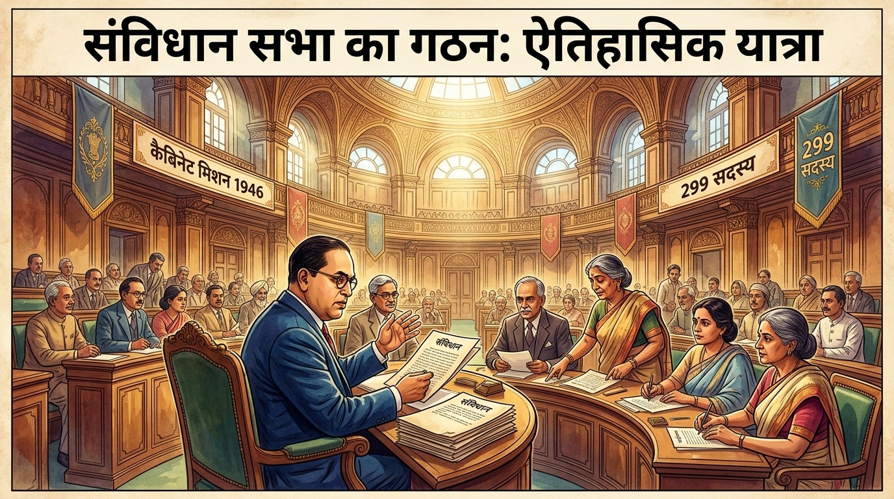
🎨 सचित्र शिक्षण कार्ड: संविधान सभा का गठन और ऐतिहासिक यात्रा
1946 में कैबिनेट मिशन योजना के अंतर्गत गठित 299 सदस्यीय संविधान सभा में डॉ. बी.आर. आंबेडकर की अध्यक्षता वाली प्रारूप समिति ने स्वतंत्र भारत के संपूर्ण संवैधानिक भविष्य का खाका खींचा।
भारतीय संविधान सभा की सबसे बड़ी विशेषता यह थी कि वहाँ कोई भी फैसला बिना बहस के नहीं लिया गया। यह केवल 'बहुमत का शासन' नहीं, बल्कि 'तर्क संगत बहस' (Reasoned Argument) का केंद्र थी।
- खुली चर्चा: संविधान के हर अनुच्छेद, हर शब्द और यहाँ तक कि हर 'कोमा' (Comma) पर घंटों बहस हुई।
- सिर्फ एक अपवाद: 'सार्वभौमिक वयस्क मताधिकार' (Universal Adult Franchise) ही एकमात्र ऐसा प्रावधान था जो बिना किसी बहस के सर्वसम्मति से पारित हो गया।
- जनता की भागीदारी: सभा की कार्यवाही समाचार पत्रों में छपती थी और जनता से सुझाव मांगे जाते थे।
📚 ऐतिहासिक सत्य
संविधान सभा कुल 166 दिनों तक बैठी। इन बहसों के रिकॉर्ड आज भी 'Constituent Assembly Debates' के नाम से सुरक्षित हैं और न्यायपालिका इनका उपयोग संविधान की व्याख्या के लिए करती है।
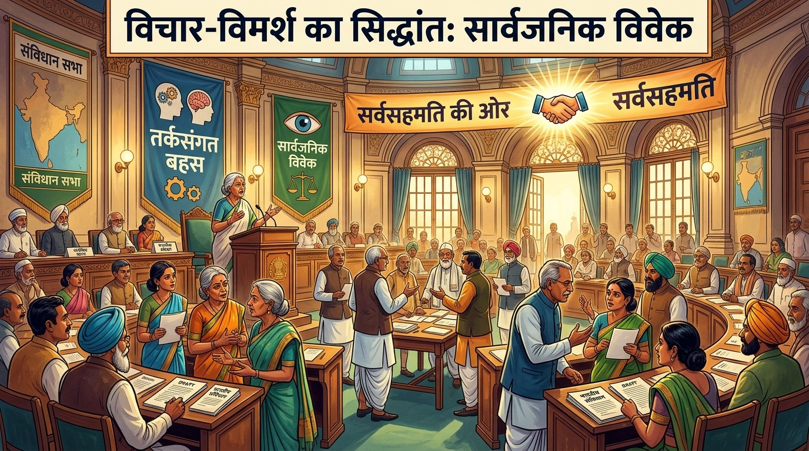
🎨 सचित्र शिक्षण कार्ड: विचार-विमर्श का सिद्धांत और सार्वजनिक विवेक
संविधान सभा में प्रत्येक धारा पर खुली और तर्कसंगत बहस हुई; निजी या संकीर्ण हितों से ऊपर उठकर राष्ट्रहित, सार्वजनिक विवेक और आम सहमति (Consensus) से ऐतिहासिक फैसले लिए गए।
इतने विशाल कार्य को व्यवस्थित करने के लिए संविधान सभा ने 8 मुख्य समितियां बनाई थीं। प्रत्येक समिति को अलग-अलग जिम्मेदारी सौंपी गई थी।
- प्रारूप समिति (Drafting Committee): डॉ. बी.आर. अंबेडकर इसके अध्यक्ष थे। इनका काम संविधान का अंतिम मसौदा तैयार करना था।
- तालमेल: अक्सर समितियों के बीच मतभेद होते थे (जैसे नेहरू विकेंद्रीकरण चाहते थे, जबकि अंबेडकर शक्तिशाली केंद्र)। इन मतभेदों को लोकतांत्रिक चर्चा से सुलझाया गया।
- परामर्श: सभा ने दुनिया भर के संविधानों का गहराई से अध्ययन किया ताकि भारत के लिए सबसे बेहतरीन व्यवस्था चुनी जा सके।
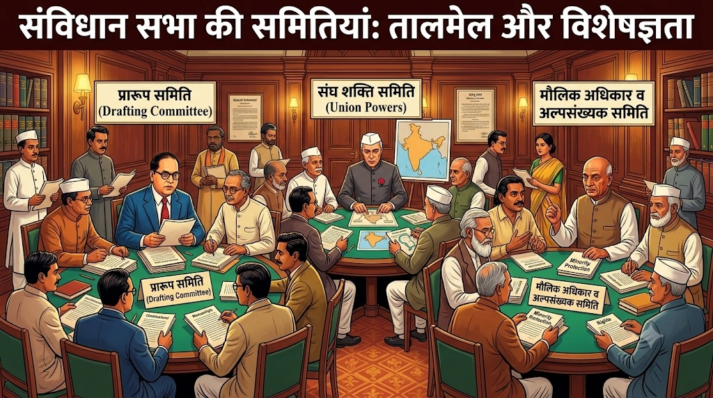
🎨 सचित्र शिक्षण कार्ड: संविधान सभा की समितियां (तालमेल और विशेषज्ञता)
संविधान सभा में 8 प्रमुख समितियों—प्रारूप समिति (डॉ. आंबेडकर), संघ शक्ति समिति (पंडित नेहरू), और मौलिक अधिकार व अल्पसंख्यक समिति (सरदार पटेल)—ने गहन विचार-विमर्श, आपसी तालमेल और विशेषज्ञता से संपूर्ण संविधान का निर्माण किया।
संविधान सभा कोई जादुई संस्था नहीं थी जिसने अचानक से नियम बना दिए। संविधान की आत्मा उन वादों और सिद्धांतों में छिपी थी जो 1928 (नेहरू रिपोर्ट) से लेकर 1947 तक राष्ट्रीय आंदोलन के दौरान किए गए थे।
स्वतंत्रता संग्राम से प्राप्त प्रमुख लोकतांत्रिक मूल्य:
- स्वतंत्रता और समानता: ये विचार आज़ादी की लड़ाई की बुनियाद थे, जिन्हें संविधान ने 'मौलिक अधिकार' बना दिया।
- सामाजिक न्याय: दलितों और पिछड़ों के उत्थान का संकल्प राष्ट्रीय आंदोलन से ही आया था।
- विविधता का सम्मान: 'अनेकता में एकता' भारत की मूल पहचान बनी।
🎯 निष्कर्ष: संविधान सभा ने केवल उन सिद्धांतों को 'कानूनी रूप' दिया जो जनता के दिल में पहले से ही आज़ादी की लड़ाई के दौरान बस चुके थे।
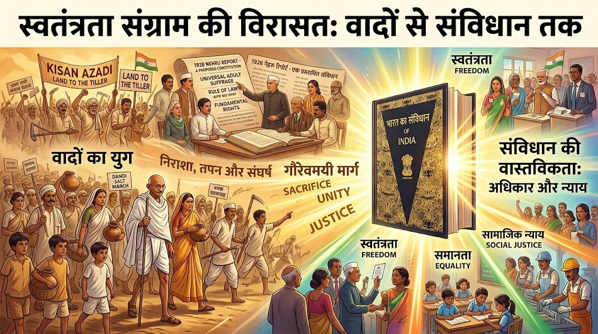
🎨 सचित्र शिक्षण कार्ड: स्वतंत्रता संग्राम की विरासत (वादों से संविधान तक)
दांडी यात्रा, किसान सत्याग्रह और 1928 की नेहरू रिपोर्ट के दौरान जनता से किए गए वादों—जैसे मौलिक अधिकार, सार्वभौमिक मताधिकार और सामाजिक न्याय—को ही स्वतंत्र भारत के संविधान में स्थायी वैधानिक रूप दिया गया।
13 दिसंबर 1946 को जवाहरलाल नेहरू ने 'उद्देश्य प्रस्ताव' (Objective Resolution) पेश किया। यह वह दस्तावेज़ था जिसने तय किया कि भारत का संविधान किन मूल्यों पर खड़ा होगा।
- पूर्ण संप्रभुता: भारत एक स्वतंत्र और संप्रभु संध होगा।
- न्याय और समानता: सभी नागरिकों को सामाजिक, आर्थिक और राजनैतिक न्याय की गारंटी दी जाएगी।
- अल्पसंख्यक संरक्षण: धार्मिक और भाषाई अल्पसंख्यकों के हितों की रक्षा के लिए विशेष प्रावधान किए जाएंगे।
- विश्व शांति: भारत विश्व शांति और मानव कल्याण के लिए अपना योगदान देगा।
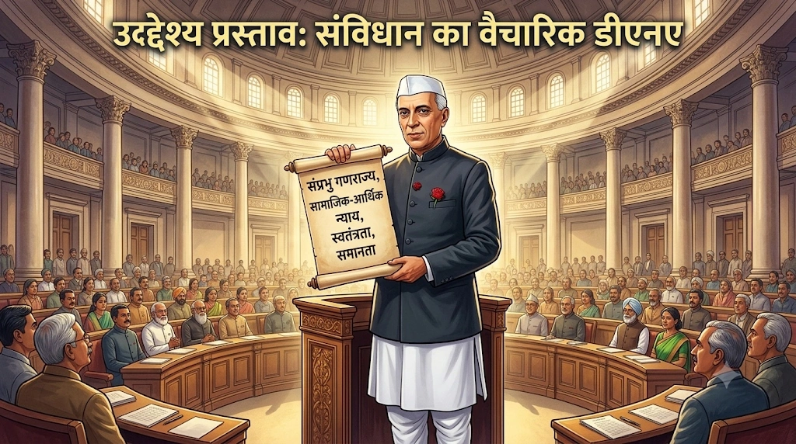
🎨 सचित्र शिक्षण कार्ड: उद्देश्य प्रस्ताव (संविधान का वैचारिक डीएनए)
13 दिसंबर 1946 को पेश किए गए ऐतिहासिक उद्देश्य प्रस्ताव ने संप्रभु गणराज्य, सामाजिक-आर्थिक न्याय, समानता और स्वतंत्रता के उन बुनियादी लोकतांत्रिक आदर्शों को स्थापित किया, जिन पर संपूर्ण भारतीय संविधान की भव्य इमारत खड़ी है।
भारतीय संविधान अक्सर 'उधार का थैला' कहा जाता है, लेकिन यह वास्तव में 'बुद्धिमत्तापूर्ण चयन' (Intelligent Synthesis) है। हमने दुनिया भर की अच्छी व्यवस्थाओं को भारतीय परिस्थितियों के अनुसार ढाल लिया।
- ब्रिटिश संविधान: संसदीय व्यवस्था और 'सर्वाधिक मत से जीत' (FPTP) की प्रणाली।
- अमेरिकी संविधान: मौलिक अधिकार, न्यायपालिका की स्वतंत्रता और राष्ट्रपति पर महाभियोग।
- आयरिश संविधान: राज्य के नीति निर्देशक तत्व (DPSP)।
- फ्रांसीसी संविधान: स्वतंत्रता, समानता और बंधुत्व के आदर्श।
- कनाडाई संविधान: एक सशक्त केंद्र वाली संघीय व्यवस्था।
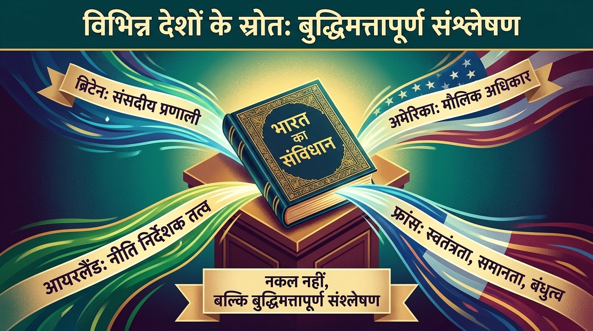
🎨 सचित्र शिक्षण कार्ड: विश्व संविधानों से बुद्धिमत्तापूर्ण संश्लेषण
भारतीय संविधान 'उधार का थैला' नहीं, बल्कि वैश्विक बुद्धिमत्ता का संश्लेषण है—ब्रिटेन से संसदीय प्रणाली, अमेरिका से मौलिक अधिकार, आयरलैंड से नीति-निर्देशक तत्व और फ्रांस से बंधुत्व के आदर्श अपनाए गए।
अक्सर यह प्रश्न उठाया जाता है कि क्या भारत का संविधान बनाने वाली संविधान सभा वास्तव में भारत की संपूर्ण जनता का प्रतिनिधित्व करती थी? आलोचकों का तर्क है कि इसका गठन सार्वभौमिक वयस्क मताधिकार से सीधे जनता द्वारा नहीं हुआ था। आइए, इस विषय का विपक्ष (आलोचनाओं) और पक्ष (वास्तविकता व औचित्य) के आधार पर गहन विश्लेषण करें।
⚡ विपक्ष के प्रमुख तर्क (आलोचकों का दृष्टिकोण):
- सीमित व अप्रत्यक्ष मताधिकार: संविधान सभा के सदस्यों का चुनाव 1935 के अधिनियम के तहत गठित प्रांतीय विधानसभाओं द्वारा अप्रत्यक्ष रूप से हुआ था। उस समय भारत की केवल 10% से 15% आबादी (जो धनी, शिक्षित और करदाता थी) को ही वोट देने का अधिकार था। आम गरीब जनता ने सीधे वोट नहीं दिया था।
- कांग्रेस का एकछत्र प्रभुत्व: संविधान सभा में कांग्रेस पार्टी का भारी बहुमत (82% से अधिक सीटें) था। प्रसिद्ध ब्रिटिश संविधान विशेषज्ञ ग्रेनविले ऑस्टिन ने टिप्पणी की थी: "संविधान सभा मूलतः एकदलीय देश में एकदलीय निकाय थी; सभा ही कांग्रेस थी और कांग्रेस ही भारत था।"
- वकीलों और अभिजात वर्ग का दबदबा: ब्रिटिश न्यायविद सर आइवर जेनिंग्स ने भारतीय संविधान को "वकीलों का स्वर्ग" (Lawyers' Paradise) कहा, क्योंकि सभा में आम किसानों और मजदूरों का प्रतिनिधित्व नगण्य था और वकीलों व उच्च मध्यम वर्ग के विचार हावी रहे।
- संप्रभुता का अभाव (प्रारंभ में): संविधान सभा का गठन ब्रिटिश सरकार के कैबिनेट मिशन प्लान 1946 के तहत हुआ था, इसलिए आलोचकों के अनुसार यह मूलतः संप्रभु संस्था नहीं थी (हालाँकि 15 अगस्त 1947 के बाद यह पूर्ण संप्रभु बन गई)।
- अत्यधिक समय व धन का अपव्यय: संविधान बनने में 2 वर्ष 11 महीने 18 दिन लगे। आलोचक नजीरुद्दीन अहमद ने प्रारूप समिति के धीमे काम पर तंज कसते हुए इसे "अपवहन समिति" (Drifting Committee) कहा था।
🛡️ पक्ष के सशक्त तर्क (वास्तविकता और औचित्य):
- कांग्रेस का व्यापक 'छाता' स्वरूप (Umbrella Character): उस समय की कांग्रेस पार्टी आज के किसी संकीर्ण राजनीतिक दल जैसी नहीं थी। वह राष्ट्रीय आंदोलन का प्रतिनिधित्व करने वाला एक विशाल मंच थी जिसमें समाजवादी, पूंजीवादी, गांधीवादी, वामपंथी और रूढ़िवादी—सभी विचारों के नेता खुलकर अपनी बात रखते थे।
- विविध सामाजिक व धार्मिक प्रतिनिधित्व: सभा में हिंदू, मुस्लिम, सिख, ईसाई, पारसी, एंग्लो-इंडियन, अनुसूचित जाति (SC), अनुसूचित जनजाति (ST) सभी समुदायों के प्रख्यात नेता शामिल थे। इसके अतिरिक्त 15 प्रखर महिला सदस्यों (हंसा मेहता, सरोजिनी नायडू, राजकुमारी अमृत कौर आदि) ने महिलाओं के समान अधिकारों के लिए ऐतिहासिक योगदान दिया।
- गैर-कांग्रेसी दिग्गजों को शीर्ष दायित्व: राष्ट्रीय सर्वसहमति बनाने के लिए डॉ. बी.आर. आंबेडकर (शेड्यूल्ड कास्ट्स फेडरेशन), डॉ. श्यामा प्रसाद मुखर्जी (हिंदू महासभा), एन. गोपालस्वामी आयंगर और अल्लादि कृष्णस्वामी अय्यर जैसे गैर-कांग्रेसी दिग्गजों को प्रारूप और संचालन में सर्वोच्च स्थान दिया गया।
- खुली सार्वजनिक बहस और जन-भागीदारी: संविधान सभा की कार्यवाहियाँ बंद कमरों में नहीं हुईं। प्रत्येक बहस समाचार पत्रों में छपती थी। सभा ने आम जनता, प्रेस, व्यापार संघों और नागरिक संगठनों से लाखों सुझाव और आपत्तियाँ आमंत्रित कीं और उन पर विचार किया।
- वयस्क मताधिकार की स्वतः स्वीकृति: संविधान सभा ने अपने गठन की सीमा को स्वीकारते हुए संविधान के पहले ही दिन से हर भारतीय वयस्क को बिना किसी जाति, लिंग या संपत्ति के भेदभाव के सार्वभौमिक मताधिकार (Universal Adult Franchise) प्रदान कर दिया।
⚖️ अंतिम निष्कर्ष और ऐतिहासिक मूल्यांकन
यद्यपि तकनीकी रूप से संविधान सभा प्रत्यक्ष वयस्क मताधिकार द्वारा नहीं चुनी गई थी, परंतु अपनी कार्यशैली, वैचारिक विविधता, सार्वजनिक विवेक और जन-कल्याणकारी दृष्टि में यह अत्यंत लोकतांत्रिक और सच्ची प्रतिनिधि संस्था थी। 75 वर्षों तक भारत में लोकतंत्र का निर्बाध बने रहना ही इसकी सच्ची वैधता का सबसे अकाट्य प्रमाण है।
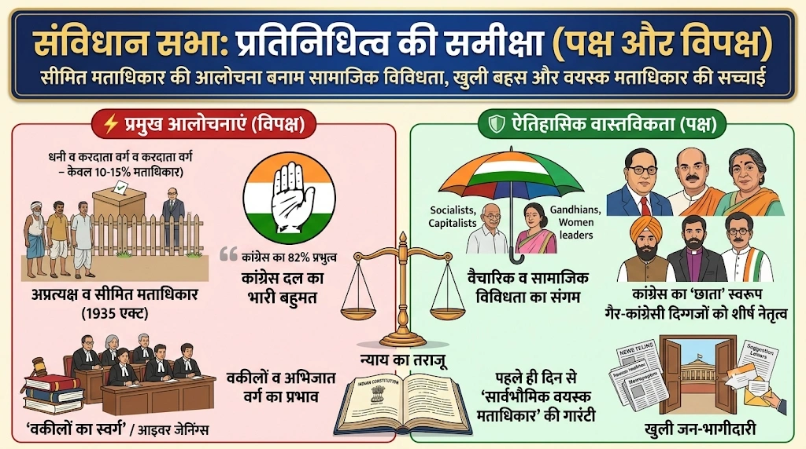
🎨 सचित्र शिक्षण कार्ड: संविधान सभा की प्रतिनिधित्व समीक्षा (पक्ष बनाम विपक्ष)
सीमित व अप्रत्यक्ष मताधिकार और 'वकीलों के स्वर्ग' जैसी आलोचनाओं के बावजूद, संविधान सभा ने कांग्रेस के 'छाता' स्वरूप, सामाजिक विविधता, गैर-कांग्रेसी दिग्गजों की भागीदारी और सार्वभौमिक वयस्क मताधिकार की संवैधानिक गारंटी से अपनी वास्तविक लोकतांत्रिक वैधता सिद्ध की।
पड़ोसी देशों और अफ्रीकी देशों के संविधान बार-बार गिर गए, लेकिन भारत का संविधान 75 साल से अटूट है। इसके पीछे 'संवैधानिक नैतिकता' (Constitutional Morality) का हाथ है।
- सेना का राजनीति से अलगाव: भारतीय संविधान ने सेना को नागरिक प्रशासन के अधीन रखा।
- लचीलेपन और कठोरता का समन्वय: इसे समय के साथ बदलना संभव है (जैसे 100 से अधिक संशोधन), लेकिन इसकी 'मूल आत्मा' को कोई नहीं छू सकता।
- न्यायपालिका की सक्रियता: अदालतों ने संविधान के संरक्षक के रूप में मज़बूत भूमिका निभाई है।
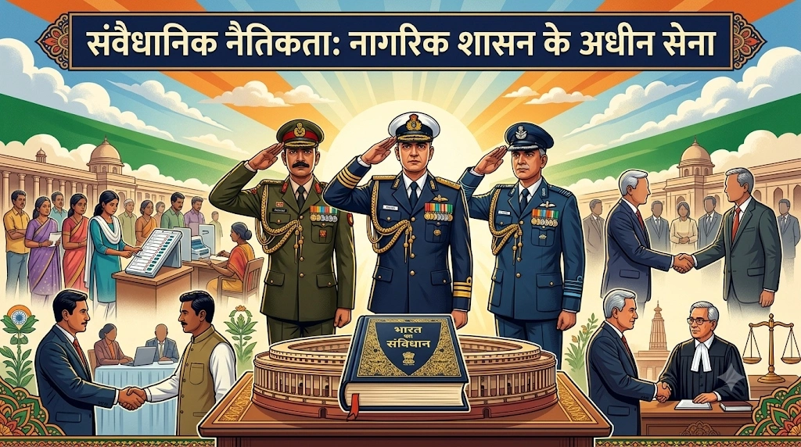
🎨 सचित्र शिक्षण कार्ड: संवैधानिक नैतिकता (नागरिक शासन के अधीन सेना)
पड़ोसी और अन्य नव-स्वतंत्र देशों में बार-बार हुए सैन्य तख्तापलट के विपरीत, भारत में सशस्त्र बलों ने लोकतांत्रिक संविधान और चुनी हुई नागरिक संसद के प्रति सर्वोच्च निष्ठा रखी, जो भारतीय संवैधानिक नैतिकता का अप्रतिम उदाहरण है।
अध्याय 1 का यह विस्तृत सफर हमें यह सिखाता है कि संविधान केवल एक दस्तावेज नहीं, बल्कि एक 'जीवंत प्रक्रिया' है। यह हर नागरिक को एक शक्तिशाली पहचान देता है और सरकार को जवाबदेह बनाता है। आने वाले अध्यायों में हम देखेंगे कि कैसे ये सिद्धांत व्यावहारिक राजनीति में काम करते हैं।
🎯 मास्टर सिनोप्सिस (Final Synopsis)
"संविधान वह पुल है जो हमें औपनिवेशिक अतीत की गुलामी से भविष्य के लोकतांत्रिक गौरव की ओर ले जाता है।" इसकी शक्ति कागज में नहीं, बल्कि उन लोगों की निष्ठा में है जो इसे चलाते हैं। यदि नागरिक जागरूक हैं, तो संविधान कभी विफल नहीं होगा। (संपूर्ण अध्याय 1: सफलतापूर्वक मास्टर एडिशन में रूपांतरित)।
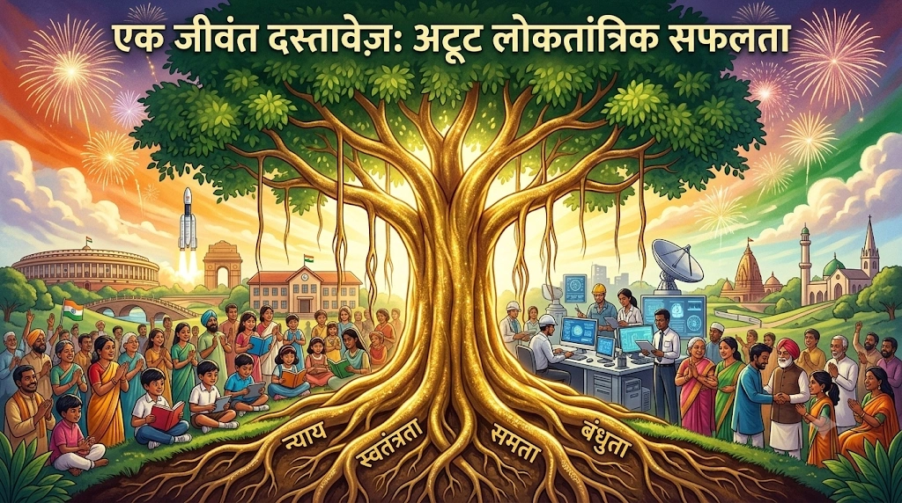
🎨 सचित्र शिक्षण कार्ड: एक जीवंत दस्तावेज़ (अटूट लोकतांत्रिक सफलता)
कठोरता और लचीलेपन के अद्भुत समन्वय, न्यायिक सजगता और भारतीय जनता की संवैधानिक नैतिकता के बल पर भारत का संविधान 75 वर्षों से एक जीवंत और अक्षुण्ण लोकतांत्रिक प्रकाश स्तंभ बना हुआ है।